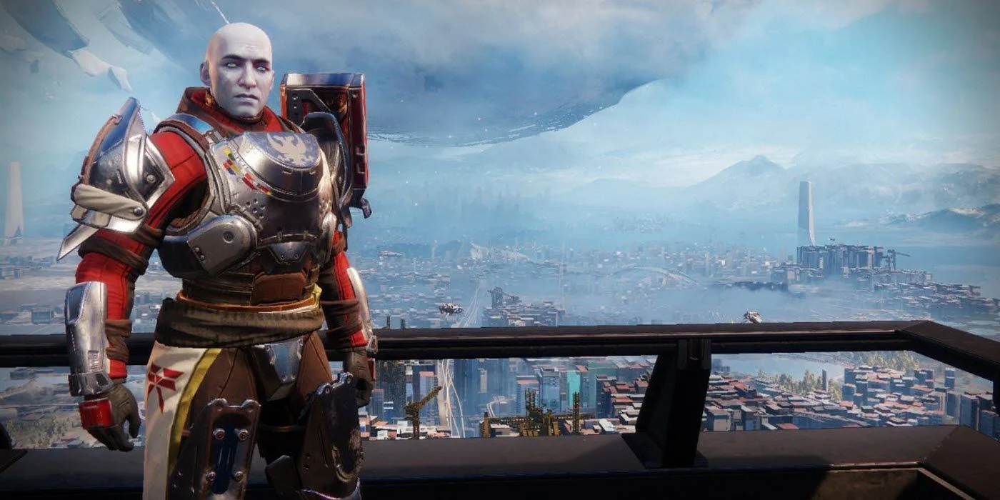
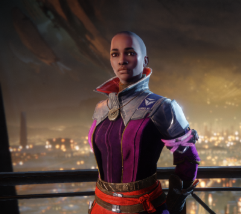
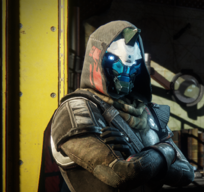
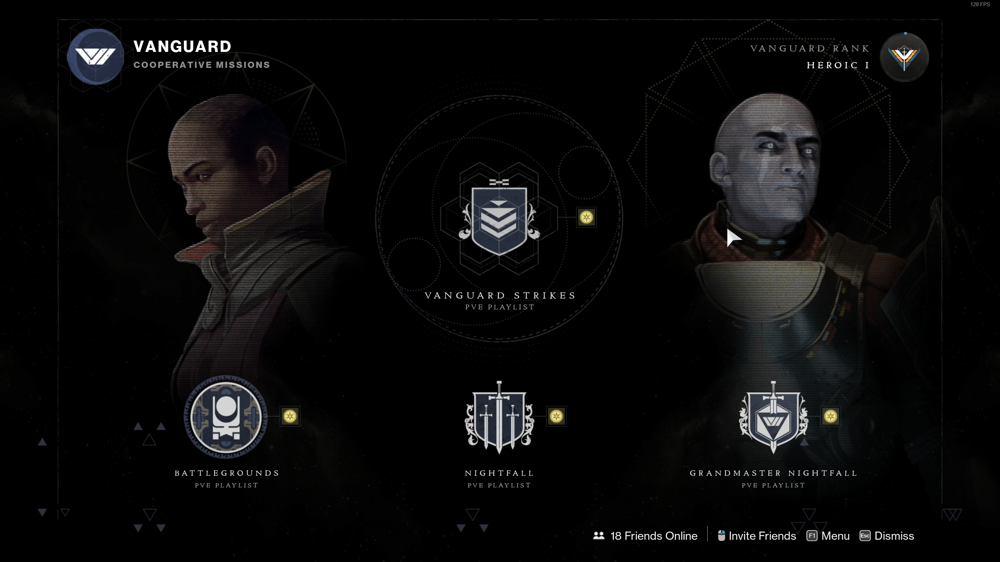

The Vanguard are the most elite Guardians who coordinate the last city's defenses, they organize assaults on enemy strongholds and assasinations of their leaders, and mentor newly risen Guardians. The vanguard also sell items to the player.
  Vanguard ops is the playlist where the battlegrounds and strikes are thrown together in a randomized playlist that matches you with other players. These take around 15 minutes to complete.
